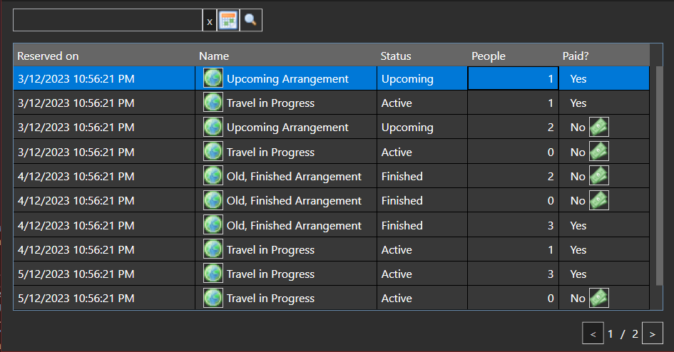

The travel history page contains a paginated, filterable table containing your entire travel history.
At the top of the page you can also see a search field, along with a pop-up calendar button.
Using these you can search your travel history by arrangement name and date of reservation.

Image 1. Travel history page.
The table contains the following columns:
Reserved on: Date on which the reservation was made
Name: Name of the reserved arrangement
Status: Status of the reserved arrangement (upcoming, active, finished)
People: Number of people on the reservation
Paid?: Payment status of the reservation. If you did not pay for the arrangement yet, you can do it here.